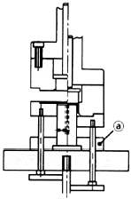
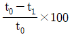
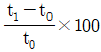
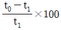
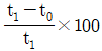
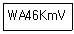
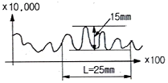
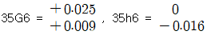

사출(프레스)금형설계기사 (2017-05-07 기출문제)
1과목: 금형설계
1. 사출금형 부품인 스프루 부시 설계에 대한 설명으로 옳은 것은?
- 스프루 구멍의 테이퍼는 1°이하로 한다.
- 스프루 길이는 될 수 있는 한 길게 하는 것이 좋다.
- 스프루 입구의 R는 노즐 선단 r보다 1~2㎜ 정도 작게 한다.
- 스프루 부시 직경은 노즐 선단 직경보다 0.5~1㎜ 정도 크게 한다.
(정답률: 67%)

2. 다음 중 PET병과 같은 용기를 성형하는데 적합한 성형법은?
- 압축 성형
- 압출 성형
- 캘린더 성형
- 블로우(중공) 성형
(정답률: 75%)
3. 용융된 수지가 금형의 캐비티 내에서 분기하여 흐르다가 합류한 부분에 선이 생기는 현상을 무엇이라 하는가?
- 싱크마크
- 웰드라인
- 충전부족
- 플로마크
(정답률: 81%)
4. 사출 성형기에서 스크루 선단의 지름이 56㎝, 램의 지름은 82㎝, 램에 걸리는 유압이 260kgf/cm2일 때, 사출압력[kgf/cm2]은 약 얼마인가?
- 38.1
- 55.8
- 380.7
- 557.5
(정답률: 28%)
5. 에어 이젝트 방식에 대한 설명으로 틀린 것은?
- 에어밸브에는 리턴 핀이 필요하다.
- 이젝트 플레이트 조립기구가 필요 없다.
- 코어형과 캐비티형 중 어느 것에도 사용이 가능하다.
- 성형품과 코어사이의 진공에 의한 문제점을 해결할 수 있다.
(정답률: 56%)
6. 러너리스 금형의 특징으로 틀린 것은?
- 금형설계 및 보수에 고도의 기술이 요구된다.
- 성형품의 형상 및 사용 수지에 제한이 따른다.
- 성형 개시를 위한 준비에 긴 시간이 소요된다.
- 스프루나 러너의 재처리에 따르는 비용이 증가한다.
(정답률: 50%)
7. 다음 수지 중 성형수축률이 가장 작은 것은?
- PE
- PP
- ABS
- POM
(정답률: 63%)
8. 파팅 라인의 위치선정에 대한 설명으로 틀린 것은?
- 제품의 조립부 부분은 피한다.
- 언더컷을 피할 수 있는 곳으로 택한다.
- 눈에 잘 보이는 위치 또는 형상으로 한다.
- 금형 열림의 방향에 수직인 평면으로 한다.
(정답률: 77%)
9. 다음 중 앵귤러 핀의 각도가 20°일 때 적절한 로킹블록의 각도는 얼마인가?
- 14°
- 16°
- 19°
- 22°
(정답률: 64%)
10. 사출형성에서 CAE를 이용한 냉각해석시 입력조건과 관련 없는 것은?
- 온도경계조건
- 냉각수 회로 특성
- 수지의 배향 조건
- 캐비티의 두께와 재질
(정답률: 55%)
11. 전단 가공된 제품을 정확한 치수로 다듬질하거나 전단면을 깨끗하게 가공하기 위한, 전단 가공을 무엇이라 하는가?
- 노칭
- 셰이빙
- 슬리팅
- 트리밍
(정답률: 68%)
12. 드로잉 가공 제품의 쇼크 마크에 대한 설명으로 틀린 것은?
- 드로잉 속도가 빠를 때 생긴다.
- 재 드로잉 펀치의 모서리 반경이 클 때 생긴다.
- 펀치 또는 다이의 모서리 반경이 작을 때 생긴다.
- 용기의 측벽에 생기는 작은 홈 모양의 고리를 말한다.
(정답률: 44%)
13. 다음 드로잉 금형의 구조에서 ⓐ 가 지시하는 부품의 명칭은?

- 녹아웃
- 다이 홀더
- 녹아웃 로드
- 펀치 플레이트
(정답률: 62%)
14. 전단력을 줄이기 위해 펀치 또는 다이의 절삭날에 각도를 주는 것을 무엇이라 하는가?
- 굽힘각
- 시어각
- 릴리프각
- 클리어런스
(정답률: 68%)
15. 프로그레시브 프레스 작업을 자동화하기 위한 주변 장치로서 적합하지 않은 것은?
- 텀블러
- 레벨러
- 롤 피더
- 언코일러
(정답률: 69%)
16. 굽힘 가공(bending) 시 스프링 백 현상의 원인과 관계가 없는 것은?
- 펀치의 R이 크다.
- 굽힘 깊이가 깊다.
- 클리어런스가 크다.
- 녹 아웃 압력이 낮다.
(정답률: 39%)
17. 두께가 5㎜이고 굽힘길이가 2000㎜이며 연강판 인장강도가 40kgf/mm2 인 재료를 90도로 V굽힘 가공을 하려고 한다. 다이 어깨폭이 판 두께의 8배이고 굽힘 반지름이 판 두께의 1.2배 일 때, 필요한 힘은 몇 ton인가? (단, 보정계수는 1.33으로 한다.)
- 79.8
- 76.5
- 66.5
- 56.5
(정답률: 40%)
18. 스트리퍼(stripper)의 기능에 대한 설명 중 틀린 것은?
- 펀치의 강도를 보강하는 기능을 가지고 있다.
- 소재의 변형 방지 및 펀치의 안내를 하여 준다.
- 소재를 펀치로부터 빼주는 기능을 가지고 있다.
- 스트리퍼는 항상 하형에 다이와 함께 고정되어 있다.
(정답률: 60%)
19. 아이어닝률을 구하는 식으로 옳은 것은? (단, 가공 전의 판 두께는 t0, 가공 후의 판 두께는 t1이다.)




(정답률: 62%)
20. 트랜스퍼 금형에 대한 설명으로 틀린 것은?
- 대량생산이 용이하다.
- 중간 열처리 공정 삽입이 가능하다.
- 프레스에 여러 개의 다이세트가 설치된다.
- 트랜스퍼 바(transfer bar)라는 이송장치를 사용한다.
(정답률: 67%)
2과목: 기계제작법
21. 진공 중에서 용접하는 방법으로 일반 금속의 접합뿐만 아니라 내화성 금속, 매우 산화되기 쉬운 금속에 적합한 용접법은?
- 레이저용접
- 전자빔용접
- 초음파용접
- TIG 용접
(정답률: 40%)
22. 숏피닝(shot peening)에 대한 설명으로 틀린 것은?
- 숏피닝은 얇은 공작물일수록 효과가 크다.
- 가공물 표면에 작은 헤머와 같은 작용을 하는 형태로 일종의 열간 가공법이다.
- 가공물 표명에 가공경화 된 잔류압축응력층이 형성된다.
- 반복하중에 대한 피로파괴에 큰 저항을 갖고 있기 때문에 각종 스프링에 널리 이용된다.
(정답률: 46%)
23. 다음 중 연삭입자를 사용하지 않는 가공법은?
- 버핑
- 호닝
- 버니싱
- 래핑
(정답률: 45%)
24. 연삭숫돌에서 눈메움(loading)의 발생 원인으로 가장 거리가 먼 것은?
- 연삭 숫돌 입도가 너무 적거나 연삭 깊이가 클 경우
- 숫돌의 조직이 너무 치밀한 경우
- 연한 금속을 연삭할 경우
- 숫돌의 원주 속도가 너무 클 경우
(정답률: 49%)
25. 다음 중 고속회전 및 정밀한 이송기구를 갖추고 있으며, 다이아몬드 또는 초경합금의 절삭공구로 가공하는 보링 머신으로 정밀도가 높고 표면거칠기가 우수한 내연기관 실린더나 베어링 면을 가공하기에 적합한 것은?
- 보통 보링 머신
- 코어 보링 머신
- 정밀 보링 머신
- 드릴 보링 머신
(정답률: 75%)
26. 다음 연삭숫돌의 표시방식에서 V가 나타내는 것은?

- 무기질 입도
- 무기질 결합체
- 유기질 입도
- 유기질 결합체
(정답률: 47%)
27. 절삭공구로 공작물을 가공 시 유동형 칩이 발생하는 조건으로 틀린 것은?
- 절삭깊이가 클 때
- 연성재료를 가공할 때
- 경사각이 클 때
- 절삭속도가 빠를 때
(정답률: 62%)
28. 다음 중 냉간 가공의 특징이 아닌 것은?
- 결정 조직의 미세화 효과가 있다.
- 정밀한 가공으로 치수가 정확하다.
- 가공면이 깨끗하고 아름답다.
- 강도증가와 같은 기계적 성질을 개선할 수 있다.
(정답률: 50%)
29. 다음 중 보석, 유리, 자기 등을 정밀 가공하는데 가장 적합한 가공 방법은?
- 전해 연삭
- 방전 가공
- 전해 연마
- 초음파 가공
(정답률: 56%)
30. 일반적으로 봉재의 지름이나 판재의 두께를 측정하는 게이지는?
- 와이어 게이지
- 틈새 게이지
- 반지름 게이지
- 센터 게이지
(정답률: 50%)
31. 다음 중 목형제작 시 주형이 손상되지 않고 목형을 주형으로부터 뽑아내기 위한 것은?
- 코어 상자
- 다웰 핀
- 목형 구배
- 코어
(정답률: 71%)
32. 두께 2㎜의 연강판에 지름 20㎜의 구멍을 뚫을 때 필요한 전단력의 크기는 약 몇 kN인가? (단, 판의 전단저항은 250 N/mm2이다.)
- 18.24
- 26.87
- 31.42
- 42.55
(정답률: 46%)
33. 가공의 영향으로 생긴 스트레인이나 내부 응력을 제거하고 미세한 표준조직으로 기계적 성질을 향상 시키는 열처리법은?
- 소프트닝
- 보로나이징
- 하드 페이싱
- 노멀라이징
(정답률: 60%)
34. 일반적으로 화학적 가공공정 순서가 가장 적절한 것은?
- 청정 - 마스킹(marsking) - 에칭(etching) - 피막제거 - 수세
- 청정 - 수세 - 마스킹(marsking) - 피막제거 - 에칭(etching)
- 마스킹(marsking) - 에칭(etching) - 피막제거 - 청정 - 수세
- 에칭(etching) - 마스킹(marsking) - 청정 - 피막제거 - 수세
(정답률: 61%)
35. 다음 중 심냉 처리의 목적으로 가장 적절한 것은?
- 잔류 오스테나이트를 마르텐자이트화 시키는 것
- 잔류 마르텐자이트를 오스테나이트화 시키는 것
- 잔류 펄라이트를 오스테나이트화 시키는 것
- 잔류 솔바이트를 마르텐자이트화 시키는 것
(정답률: 56%)
36. 주물을 제작할 때 생사형 주형의 경우, 주물 중량 500kg, 주물의 두께에 따른 계수를 2.2라 할 때 주입시간은 약 몇 초인가?
- 33.8
- 49.2
- 52.8
- 56.4
(정답률: 43%)
37. 공작기계의 회전 속도열에서 다음 중 가장 많이 사용되는 것은?
- 등차급수 속도열
- 등비급수 속도열
- 대수급수 속도열
- 조화급수 속도열
(정답률: 59%)
38. 주철을 저속으로 절삭할 때 나타나는 것으로 순간적인 균열이 발생하여 생기는 칩의 형태는?
- 유동형(flow type)
- 전단형(shear type)
- 열단형(tear type)
- 균열형(crack type)
(정답률: 66%)
39. 다음 중 각도 측정 게이지가 아닌 것은?
- 하이트 게이지
- 오토 콜리메이터
- 수준기
- 사인바
(정답률: 60%)
40. 테르밋 용접(thermit welding)에 대한 설명으로 옳은 것은?
- 피복 아크 용접법 중의 한가지 방법이다.
- 산화철과 알루미늄의 반응열을 이용한 방법이다.
- 원자수소의 발열을 이용한 방법이다.
- 액체산소를 사용한 가스용접법의 일종이다.
(정답률: 50%)
3과목: 금속재료학
41. 다음 중 Ag - Cu 합금에 해당되는 것은?
- 스텔라이트(stellite)
- 핑크골드(pink gold)
- 스털링 실버(sterling silver)
- 화이트 골드(white gold)
(정답률: 56%)
42. 반도체 기판으로 사용되며 단결정, 다결정, 비정질의 3종으로 사용되는 금속은?
- W
- Si
- Ni
- Cr
(정답률: 53%)
43. 경질 합금의 소결 고온압착법(Hot Press Method)에 대한 설명으로 틀린 것은?
- 완성치수와 가까운 형상의 것을 얻을 수 있다.
- 로 내에서 1개씩 소결되므로 다량 생산방식을 사용할 수 없다.
- 소결온도와 압력을 잘못 조절하면 액상이 주위에 배어 나와 편석을 일으킨다.
- 조직이 조대하고 경도는 향상되며, 상온에서 압착한 소결체보다 표면조도가 낮다.
(정답률: 57%)
44. 정적인 하중으로 파괴를 일으키는 응력보다 훨씬 낮은 응력으로도 반복하여 하중을 가하면 결국 재료가 파괴되는 현상은?
- 피로 현상
- 에릭센 현상
- 항복 응력 현상
- 크리프 한도 현상
(정답률: 64%)
45. Mg 및 그 합금에 대한 설명으로 옳은 것은?
- Mg은 실용재료로 비중이 약 8.5로 무거운 금속이다.
- 비강도(比强度)가 작아서 휴대용 기기나 항공우주용 재료로는 사용할 수 없다.
- Mg은 고온에서 매우 비활성이므로 분말이나 절삭설은 발화의 위험이 없다.
- 고순도의 제품에서는 내식성이 우수하나 저순도 제품에서는 떨어지므로 표면피막처리가 필요하다.
(정답률: 53%)
46. 분말야금법(Powder Metallurgy)에 대한 설명으로 틀린 것은?
- 경하고 취약한 금속제품의 단조가 가능하다.
- 통상이 용융방법으로는 얻을 수 없는 고융점 금속재료의 제조에 응용할 수 있다.
- 재료를 용해하지 않으므로 용기나 탈산제 등에서 오는 불순물의 혼입이 없이 순수한 금속을 제조할 수 있다.
- 부분적 용해는 있으나 전부 또는 대부분이 용해되는 일이 없으므로 각 성분금속의 배합비대로 또한 분말의 혼합이 균일하면 균일제품이 얻어진다.
(정답률: 32%)
47. Al - Cu - Si계 합금으로서 Si를 넣어 주조성을 개선하고 Cu를 첨가하여 피삭성을 향상시킨 합금은?
- Y합금
- 라우탈(Lautal)
- 로엑스(Lo-Ex)합금
- 하이드로날륨(Hydronalium)
(정답률: 54%)
48. 5~20%Zn 황동으로 빛깔이 금빛에 가까우며 금박 및 금분의 대용품으로 사용되는 것은?
- 톰백(tombac)
- 문쯔 메탈(muntz metal)
- 하드 브라스(hard brass)
- 델타 메탈(delta metal)
(정답률: 56%)
49. 베어링용 합금 중에서 고하중 고속전용 베어링으로 적합하며 주석계 화이트 메탈이라 불리우는 합금은?
- 오일라이트(oilite)
- 바이메탈(bimetal)
- 반메탈(bahn metal)
- 베빗메탈(babbit metal)
(정답률: 48%)
50. 게이지용 강의 특징을 설명한 것 중 틀린 것은?
- 내식성이 좋을 것
- 마모성이 크고 경도가 높을 것
- 담금질에 의한 변형이 적을 것
- 오랜 시간 경과하여도 치수의 변화가 적을 것
(정답률: 65%)
51. 초강인강에 있어 예리한 노치를 넣은 다음 항복강도보다 낮은 정적 인장응력을 가하면 어느 시간 후에 갑자기 파괴되는 지체파괴(delayed fracture)현상이 나타난다. 이러한 지체파괴의 원인을 설명한 것 중 틀린 것은?
- 잔류응력이 있을 때
- 응력집중부가 있을 때
- 압축응력이 있을 때
- 강재의 강도수준이 높을 때
(정답률: 41%)
52. 철강에 함유되는 원소 중 Fe와 반응하여 저융점의 화합물을 형성하여 열간가공 시에 고온(적열)취성을 일으키는 원소는?
- N
- S
- O
- P
(정답률: 49%)
53. 강과 비교하여 회주철의 특징을 설명한 것 중 틀린 것은?
- 감쇠능이 크다.
- 피삭성이 좋다.
- 탄성계수가 높다.
- 인장강도에 비해 압축강도가 높다.
(정답률: 42%)
54. 강중에 비금속 개재물의 영향을 설명한 것으로 틀린 것은?
- 재료 내부에 점재하여 인성을 해친다.
- 강에 백점이나 헤어 크랙의 원인이 된다.
- 산화철, 알루미나 등은 단조나 압연 중에 균열을 일으킨다.
- 열처리 하였을 때 개재물로부터 균열을 일으키기 쉽다.
(정답률: 46%)
55. 쾌삭강(free cutting steel)에 관한 설명으로 틀린 것은?
- 연(Pb)쾌삭강에서 Pb는 미립자로 존재한다.
- 황복합쾌삭강은 S와 Pb를 동시에 첨가한 초쾌삭강이다.
- 황쾌삭강에서 MnS는 열간가공시 압연방향과 직각방향의 기계적 성질을 다르게 한다.
- 칼슘쾌삭강은 쾌삭성을 높이고 기계적성질을 저하시킨 강이다.
(정답률: 50%)
56. 고속도공구강에 대한 설명 중 틀린 것은?
- 대표적인 표준 조성으로는 18%W-4%Cr-1%V 이다.
- 적열경도를 유지시키기 위하여 W를 첨가한다.
- 내산화성과 경도를 높이기 위하여 Pb을 첨가한다.
- 고속도공구강은 고합금강이며 고속절삭에 사용한다.
(정답률: 42%)
57. Fe52%, Ni36%, Cr12%의 합금으로 고급시계나 정밀저울 등의 스프링 및 정밀기계 부품에 사용하는 것은?
- 엘린바
- 라우탈
- 덕타일
- 미하나이트
(정답률: 57%)
58. 질화강(nitriding steel)의 특징으로 옳은 것은?
- 경화층은 두껍고 경도가 침탄 한 것보다 낮다.
- 마모 부식에 대한 저항이 낮다.
- 피로강도가 크다.
- 고온강도가 낮다.
(정답률: 43%)
59. 금속의 일반적 특성이 아닌 것은?
- 전기의 양도체이다.
- 연성 및 전성이 크다.
- 금속 고유의 광택을 갖는다.
- 액체 상태에서 결정구조를 가진다.
(정답률: 63%)
60. 주철의 성장을 방지하는 방법으로 틀린 것은?
- C 및 Si의 양을 적게 한다.
- 구상흑연을 편성화시킨다.
- 흑연의 미세화로 조직을 치밀하게 한다.
- Cr, Mo, V 등을 첨가하여 펄라이트 중의 Fe3C 분해를 막는다.
(정답률: 38%)
4과목: 정밀계측
61. 0점 조정한 KS 1종(0.02㎜/m)수준기를 정밀 정반면에 올려놓았더니 기포가 2눈금 이동하였다. 길이가 200㎜인 수준기 양 끝단 정반면의 높이차는 얼마인가?
- 0.008㎜
- 0.02㎜
- 0.04㎜
- 0.06㎜
(정답률: 35%)
62. 지름 20㎜, 길이 1m의 연강봉의 길이를 측정할 때 0.6㎛의 압축이 있었다고 할 경유, 측정력은 몇 N인가? (단, 봉의 굽힘은 없으며, 세로탄성계수는 210Gpa 이다.)
- 5.6
- 39.6
- 134.6
- 2⑤.6
(정답률: 37%)
63. 수준기의 1눈금을 2mm로 하고 감도를 1'으로 하고자 할 때 기포관의 곡률반경은 약 얼마인가?
- 3.4m
- 6.9m
- 42m
- 106m
(정답률: 39%)
64. 아베의 원리에 부적합한 측정기는?
- 나사 마이크로미터
- 외측 마이크로미터
- 그루브 마이크로미터
- 포인트 마이크로미터
(정답률: 49%)
65. 그림과 같은 표면 거칠기 곡선(세로는 x 10000 배, 가로는 x100 배)을 기록하였을 때 세로방향 길이 15mm의 실제 길이는 몇 ㎛ 인가? (단, L 는 기준길이이다.)

- 1.5㎛
- 15㎛
- 2.5㎛
- 25㎛
(정답률: 51%)
66. 미터나사에서 최적선경 dw=3.000㎜의 3침을 사용하여 외측거리 M=50.000㎜를 얻었다면 유효지름은?
- 34.780
- 34.880
- 35.500
- 45.500
(정답률: 35%)
67. 측정 관련 용어의 정의가 틀린 것은?
- 정밀도 - 산포가 작은 정도를 말한다.
- 정확도 - 치우침이 작은 정도를 말한다.
- 오차 - 측정치에서 참값을 뺀 값을 말한다.
- 되돌림 오차 - 측정치에서 시료평균을 뺀 값을 말한다.
(정답률: 60%)
68. 거칠기 프로파일에서 산출한 표면거칠기 파라미터는?
- P
- R
- W
- X
(정답률: 51%)
69. 다음 끼워맞춤 공차 중 억지 끼워 맞춤에 해당되는 것은? (단, 구멍 기준 끼워 맞춤이다.)
- 20H7/g6
- 40H7/h6
- 20H7/f6
- 40H7/s6
(정답률: 43%)
70. 석(石) 정반의 특징으로 틀린 것은?
- 녹이 슬지 않는다.
- 온도 변화에 민감하다.
- 자성체의 측정에도 사용할 수 있다.
- 상처 발생 시 돌기가 생기지 않는다.
(정답률: 65%)
71. 미터나사의 유효경을 삼침 게이지로 측정하고자 한다. 피치가 1.50㎜인 나사에 사용될 삼침 게이지의 최적 선경은 얼마인가?
- 0.845535 ㎜
- 0.866025 ㎜
- 1.299037 ㎜
- 1.447365 ㎜
(정답률: 48%)
72. 원형 부분의 기하학적 원으로부터의 차이의 크기를 측정하는 진원도는 크게 3가지 종류로 규정하고 있는데 그 종류에 포함되지 않는 것은?
- 3점법에 의한 진원도
- 지름법에 의한 진원도
- 타원법에 의한 진원도
- 반지름법에 의한 진원도
(정답률: 65%)
73. 다음 중 3차원 측정기의 정도 평가 시 X(Y)축의 롤링(rolling) 검사에 사용되는 측정기로 적합한 것은?
- 전기 수준기
- 단색 광원장치
- 진원도 측정기
- 공기 마이크로 미터
(정답률: 40%)
74. 유체를 이용한 컴퍼레이터는?
- 수준기
- 미니미터
- 멀티미터
- 옵티미터
(정답률: 55%)
75. 외측 마이크로미터의 나사피치가 0.5㎜이고, 딤블의 원주눈금이 50등분 되어 있을 경우 딤블의 1눈금 회전에 의한 스핀들의 이동량은 얼마인가?
- 0.01㎜
- 0.02㎜
- 0.⑤㎜
- 0.1㎜
(정답률: 50%)
76. +2㎛의 오차가 있는 50㎜ 게이지블록에 다이얼게이지(최소눈금 0.001㎜)를 0점으로 조정하여 부품을 비교 측정 하였더니 다이얼게이지 눈금이 3눈금 더 시계방향으로 움직였다. 부품의 치수는 얼마인가?
- 49.999㎜
- 49.997㎜
- 50.003㎜
- 50.0⑤㎜
(정답률: 46%)
77. 다음 중 컴퍼레이터(comparator)의 종류에 해당하지 않는 것은?
- 미니미터
- 옵티미터
- 게이지 블록
- 다이얼 게이지
(정답률: 57%)
78. 35 G6/h6의 최소 틈새 및 최대 틈새의 값은? (단,

)- 최소 0㎛, 최대 16㎛
- 최소 9㎛, 최대 25㎛
- 최소 0㎛, 최대 25㎛
- 최소 9㎛, 최대 41㎛
(정답률: 50%)
79. 길이 400mm인 제품의 온도가 5℃ 올라가면 얼마나 팽창하는가? (단, 재질은 강철이고 선팽창계수는 24 x 10-6/℃이다.)
- 14 ㎛
- 28 ㎛
- 38 ㎛
- 48 ㎛
(정답률: 44%)
80. 실린더 게이지 및 텔레스코핑 게이지를 이용하여 측정할 때의 주의사항으로 틀린 것은?
- 텔레스코핑 게이지의 치수를 마이크로미터로 측정할 때는 가능한 측정압을 크게 해야 확실하다.
- 실린더게이지를 기준 링게이지에 0점 조정할 때는 좌우방향으로 움직여 측정자가 최대점에 닿도록 한다.
- 실린더게이지를 이용하여 내경을 측정할 때 링게이지 축심과 다이얼게이지 스핀들의 축심이 일치한 상태에서 측정한다.
- 실린더게이지를 마이크로미터나 게이지블록을 이용하여 0점 조정할 때는 항상 측정자는 최단지점을 찾으면서 지침은 최대로 회전하는 지점을 찾는다.
(정답률: 52%)